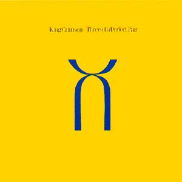
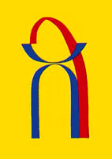

Three of a perfect pair
Three of a perfect pair
|
|
|
 Grabado en 1984 El último de otra etapa. Otra buena despedida, como para quedarse con el gusto y esperando. De los 3 discos que grabó esta encarnación, es donde más separadas están las facetas integrantes: el espíritu oscuro y experimental (más propio de Fripp) y el pop/new wave (más ligados a Belew y Levin). Y quizás por eso fue un final; no se lograba más una síntesis. Fripp ya venía haciendo pública su decepción sobre la evolución del grupo desde meses antes. Por ejemplo, en una entrevista de mayo del '84, decía: "Siento que he creado un campo en el cual otra gente puede descubrirse a sí misma. Estoy decepcionado de que ellos no crean un espacio para que yo me descubra a mí mismo. Esa es la dinámica de lo que sucede: estoy apretujado afuera. Tienes tres tipos que están muy entusiasmados con alguien que les provee espacio. Y yo diciendo: 'Grandes tipos. Los tres están haciendo cosas maravillosas. ¿Puedo entrar, por favor? ¿Hay un espacio?'. Así que todo mi mejor trabajo de guitarra se hace fuera de Crimson. Me gusta tener espacio, si hay un tremendo montón pasando, tiendo a no tocar" (entrevista con Anthony DeCurtis publicada en revista "Record").
El tema que da nombre al disco es una típica canción-Belew y tiene los característicos fraseos interconectados de las guitarras; se convirtió en un clásico. El tema más promocionado fue Sleepless (se editó un videoclip), quizás por ser el más accesible al gran público de esa época (es bien new wave), pero no es el mejor. Los mejores temas de este disco son instrumentales que hacen recordar a la música del KC de 1973/74, aunque con el sonido típico de la formación de los '80: Industry y Larks' tongues in aspic III (en la intro de éste último, las guitarras hacen un potente fraseo similar al de Larks' part I, del '73; hacia el final, esta pieza puede dejar la sensación de que le faltó una mejor resolución). Quizás por ser despedida, el grupo se soltó un poco más y ofreció dos improvisaciones en estudio: Nuages y No warning (Nuages es excelente), que pueden considerarse antecedentes directos de las realizadas por la banda y los ProjeKcts en la década de los '90.
Música firmada por el grupo - Letras de Adrian Belew 
El arte del album es una reducción de una pintura de Peter Willis (alumno de Sherborne House, donde había estado internado Fripp a mediados de los '70), que representaba la reconciliación de la cristiandad occidental con la cristiandad oriental. La portada frontal tiene los dos elementos, representando los principios de lo masculino y lo femenino (es como una continuación de la tapa del sol y la luna de "Larks' tongues in aspic" de 1973). La portada posterior (mostrada a la izquierda), agrega el tercer elemento que une y reconcilia los anteriores opuestos. Para Fripp, representa "la progresión de lo dual a la tríada, desde la oposición a la reconciliación, desde hombre y mujer a la familia: padre-madre-hijo." (cita de una carta que Fripp le envió al biógrafo crimsoniano Sidney Smith). Después de muchos años vuelven a emerger los opuestos y su reconciliación, tópico tocado en los comienzos por las letras de Sinfield.
|